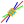
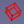

|
| Topic |
|---|
| Macros |
| Level |
| Beginner |
| Time to complete |
| Author |
| FreeCAD version |
| Example File(s) |
Contents
|
This page contains macros to add functionality to your freecad installation
Macros
 3D View operations
3D View operations

-
 Macro Rotate View: This macro rotates the current view by 90° to the left. Only works if you are in Top view.
Macro Rotate View: This macro rotates the current view by 90° to the left. Only works if you are in Top view. - Macro View Rotation: Provides a GUI to permit rotation of view by precise amounts in all three directions.
- Macro Texture Objects: This macro allows you to temporarily put a texture image on the selected objects.
- Macro Mouse Cross: This small macro turns the arrow of the mouse in a precision cross.
- Macro Align View to Face: This macro aligns the current view to a selected face.
- Macro Align Object to View: This macro align the selected object to the current View and set the coordinates Placement of the camera.
- Macro Align Camera to Working Plane: This macro aligns the camera to the current Draft Working Plane
- Macro Align Working Plane to Camera: This macro moves the current Draft Working Plane to the center of the current view
- Macro Align Face Object to View: This macro align the face of the selected object to the current View (in case face hole the hole is placed to the view).
-
 Macro Toggle Panels Visibility: This macro toggles the visibility of various supporting panels in FreeCAD, allowing the main window to be viewed with all available screen space.
Macro Toggle Panels Visibility: This macro toggles the visibility of various supporting panels in FreeCAD, allowing the main window to be viewed with all available screen space. -
 Macro FCCamera: This macro can rotate the screen in a defined angle and the defined axis and creates a plan to face the screen to create a form in the specified plan positions the selected face facing the screen, to detect the position of the camera ...
Macro FCCamera: This macro can rotate the screen in a defined angle and the defined axis and creates a plan to face the screen to create a form in the specified plan positions the selected face facing the screen, to detect the position of the camera ... -
 Macro Toggle Visibility: Set of three macro, macro 1: hidden the objects not selected, macro 2: displayed alls objects, macro 3: hidden alls objects.
Macro Toggle Visibility: Set of three macro, macro 1: hidden the objects not selected, macro 2: displayed alls objects, macro 3: hidden alls objects. - Macro Toggle Visibility2: Set of two macro, macro 1: hidden the objects not selected, macro 2: displayed alls objects, macro with the original visibility.
-
 Macro SelectVisible: All visible objects in the tree will be selected.
Macro SelectVisible: All visible objects in the tree will be selected. - Macro Manage Navigational Style: This pair of macros allow you to alter the Navigation Style while in the Sketcher.
- Macro Duplicate Selection: This macro testing if one selection are duplicate , select the object IN THE 3D VIEW the "ForbiddenCursor" stay if the or one selection is duplicate, the macro stay resident.
-
 Macro Copy3DViewToClipboard: Copy contents of 3DView resized 640, 480 px to clipboard .
Macro Copy3DViewToClipboard: Copy contents of 3DView resized 640, 480 px to clipboard . -
 Macro Perpendicular To Wire: This macro positioned your object perpendicularly to wire selected.
Macro Perpendicular To Wire: This macro positioned your object perpendicularly to wire selected. -
 Macro Rotate To Point: Macro for rotate on object on itself with the axis of rotation the boundbox center, center of mass or last point clicked
Macro Rotate To Point: Macro for rotate on object on itself with the axis of rotation the boundbox center, center of mass or last point clicked -
 Macro FCTreeView: Macro for list all objects in the project in one list without hierarchy, options sort by name, label, visibility, group, by length option search by name, label .... without case sensitive or with case sensitive and select all objects displayed in the macro window.
Macro FCTreeView: Macro for list all objects in the project in one list without hierarchy, options sort by name, label, visibility, group, by length option search by name, label .... without case sensitive or with case sensitive and select all objects displayed in the macro window. -
 Macro Select Hovering: this macro select a choice Face, Edge, Vertex hovering by the mouse.
Macro Select Hovering: this macro select a choice Face, Edge, Vertex hovering by the mouse.
 Animation
Animation

- Macro crank simul: Rotation rod and piston
- Macro Spring: Simulation of one spring
- Macro hinge: Open and close hinge
- Macro Assembly: Assembly animate
- Macro Animated Constrain: Animate angle constrain in sketcher
- Macro Assemblage Imprimante 3D: Simulation of movements of a 3D printer
- Constraint Draft: Simple example animation Draft wires by use the expression for associate many wires and simulate or verify the movement. Here the circle rotation create the movement for all objects connected
- Macro Rubik Cube: Display a Rubik Cube and interactively do slice rotations.
 Code and Scripting
Code and Scripting

- Macro MessageBox: shows how to give information to the user through the GUI.
-
 Macro Python Assistant Window: This macro provides a cut/copy/paste workspace for Python code, it is segmented so different sections can be selected and it is persistent between FreeCAD sessions.
Macro Python Assistant Window: This macro provides a cut/copy/paste workspace for Python code, it is segmented so different sections can be selected and it is persistent between FreeCAD sessions. - Macro Build Utility: This macro provides a utility to assemble a project from sub-project files using the Merge Project facility.
-
 Macro Global Variable Watcher: This macro facilitates the user selecting global variables and monitoring their values.
Macro Global Variable Watcher: This macro facilitates the user selecting global variables and monitoring their values.
 Conversion
Conversion

- Macro Extract Wires from Mesh: Extracts boundary wires from selected meshes
- Macro MeshToPart: converts selected meshes to parts
-
 Macro PartToVRML: Converts selected parts to VRML meshes for small size and faster loading (VRML models Kicad and Blender compatible)
Macro PartToVRML: Converts selected parts to VRML meshes for small size and faster loading (VRML models Kicad and Blender compatible) - Macro FaceToSketch: Converts the selected Face to a single Sketch without constraints.
-
 Macro FCWire To Volume: This macro create boolean operation with the objects selected just select the wires give the thickness and click "Create"
Macro FCWire To Volume: This macro create boolean operation with the objects selected just select the wires give the thickness and click "Create" - Macro DeepCopy: Make a compound out of a part with a copy of all its shapes.
 Drawing Workbench
Drawing Workbench

- Macro Automatic drawing: allows the user to get the view of his object in a drawing with 4 different position (front,top,iso,right). Needs some modification to be perfectly effective
- Macro CartoucheFC: This GUI macro to fill simply all fields of the cartridge of the plan implementation worksheet FreeCAD, the format of the date and the symbol of the projection mode adapt to the EU region or US selected.
-
 Macro CartoucheFC Full: This GUI macro to fill simply all fields of the cartridge templates_Full of the plan implementation worksheet FreeCAD, the format of the date and the symbol of the projection mode adapt to the EU region or US selected.
Macro CartoucheFC Full: This GUI macro to fill simply all fields of the cartridge templates_Full of the plan implementation worksheet FreeCAD, the format of the date and the symbol of the projection mode adapt to the EU region or US selected. - Macro CartoucheFC 2: This GUI macro to fill simply all fields of the cartridge model 2 of the plan implementation worksheet FreeCAD.
- Macro Normal Vector: Get the normal vector of a preselected face for creating a drawing view normal to that face
 Dxf 2D Draft
Dxf 2D Draft

- Macro Rectellipse: creates a parametric rectellipse
-
 Macro Make Circle 3 Points: creates a circle on 3 selected points, the points can be objects (this example brings together the two examples below, all parameters simply settle on a graphic window).
Macro Make Circle 3 Points: creates a circle on 3 selected points, the points can be objects (this example brings together the two examples below, all parameters simply settle on a graphic window). - Macro Draft Circle 3 Points: creates a circle from 3 selected points 2D orthogonal
- Macro Draft Circle 3 Points 3D: creates a circle from 3 selected points in the space 3D
- Macro Make Arc 3 Points: creates a arc from 3 selected points
- Macro Ellipse-Center+2Points Makes an ellipse by selecting three points (in this order): centre, major radius and minor radius
-
 Macro FC Convert Lines: this macro convert the object line, wire in line Dash, DashDot, DashDotDot,ZigZag and Hand with the dimensions given.
Macro FC Convert Lines: this macro convert the object line, wire in line Dash, DashDot, DashDotDot,ZigZag and Hand with the dimensions given. - Macro EdgesToArc: Converts the selected Edges to a circular Arc if possible. Useful for restoring discretized arcs.
- Macro Creating faces from a DXF file: This macro create face from a DXF file, the "Layer" are recognized separate and trained in groups.
-
 Macro DXF to Face and Sketch: This macro converts selected elements of imported dxf to face and sketch.
Macro DXF to Face and Sketch: This macro converts selected elements of imported dxf to face and sketch. -  Macro Compound Plus: Draf command set in a small macro for the 2D sketch example: work with the DXF files.
- Macro Dxf To Shape: Macro utility for create unique wire with many wires, the type wire created is selected to MakeWire, Bspline, BsplineCurve, BsplineCurve + Arc, Polygon, Bezier curve
 Fem
Fem

- Macro GMSH: Create FEM Meshes by GMSH Mesh Generator
 Info and measures
Info and measures

-
 Macro FCInfo: Gives a series of information about the selected shape and can display a conversion of length, inclination (degrees, radian, grade) shape, surface, volume and the weight of the form in the density selected in various international and Anglo-Saxon units
Macro FCInfo: Gives a series of information about the selected shape and can display a conversion of length, inclination (degrees, radian, grade) shape, surface, volume and the weight of the form in the density selected in various international and Anglo-Saxon units - Macro FCInfo Alternate Linux: same as above, but for Linux
-
 Macro FCInfoGlass: Gives a series of information about the selected shape and displayed in screen 3D
Macro FCInfoGlass: Gives a series of information about the selected shape and displayed in screen 3D -
 Macro FCInfoToMouse: Provide informations coordinates, length and angles in real time on the mouse in a bubble annotation displayed in the 3D screen
Macro FCInfoToMouse: Provide informations coordinates, length and angles in real time on the mouse in a bubble annotation displayed in the 3D screen - Macro Delta xyz: Gives the Delta values and the distance between 2 points
- Macro ObjectInfo: User-friendly "Info" module created by a FreeCAD user
-
 Macro Dump Objects: This macro generates a listing of all objects in the current document - the list can be in a window or on the Report view.
Macro Dump Objects: This macro generates a listing of all objects in the current document - the list can be in a window or on the Report view. -
 Macro MeasureCircle: Compute the radius of a circle by 3 points or a circular edge.
Macro MeasureCircle: Compute the radius of a circle by 3 points or a circular edge.
 Libraries
Libraries

- Macro screw maker1_2: This macro creates a screw with or without thread, according to ISO standards (screw_maker1_6.py.zip with Pyside support). (Screw Maker 2.0 - new version!)
-
 Macro BOLTS: The aim of BOLTS is to build a free and open-source standard parts library for CAD applications.
Macro BOLTS: The aim of BOLTS is to build a free and open-source standard parts library for CAD applications. -
 Macro PartsLibrary: Starts the Parts library browser
Macro PartsLibrary: Starts the Parts library browser
 Mathematical functions
Mathematical functions

- Macro 3D Parametric Curve: Draw a function described by parametric equations x(t), y(t) and z(t).
- Macro Draw 2D Function: draws a function described by an equation z=F(x)
- Macro Draw Parametric 2D Function: Based on the above macro, but for parametric and optionally polar
-
 Macro WorkFeatures: Tool utility : Tab > Wire > Curves And Surfaces Launch Curves and Surfaces Menu ...
Macro WorkFeatures: Tool utility : Tab > Wire > Curves And Surfaces Launch Curves and Surfaces Menu ...
equations.
 Multifunctional
Multifunctional

- Macro WorkFeatures: Tool utility to create plans of the axes, planes from 3 points, axes on a form, information on the coordinates of the shape and many other useful features to facilitate the creation of your project. This utility is up next in the combo view.
 Object creation
Object creation

-
 Macro Make Cube: creates a rectangular cuboid from 4 points
Macro Make Cube: creates a rectangular cuboid from 4 points - Macro Solid Sweep: creates a solid by sweeping a 2D profile along a trajectory previously selected in the 3D view. The 2D elements can be created through the regular tools in FreeCAD's GUI.
- Macro Geodesic Dome: This macro creates a geodesic dome shell
- Macro Line Length: Create a line giving coordinate XYZ length and angle to plane X Y
- Macro Cut Line: Cut a line and create x points, giving the number of points, create line or not, create points or not, create bicolor or not on choice.
- Macro Circle: Create a circle or arc giving radius, diameter, circumference, area, startangle, endangle, arc, anglecenter, cord, arrow, center (point) on choice.
- Macro Cut Circle: Cut a circle or arc and create x arcs, giving the number of cut.
- Macro Triangle AH: This macro create one triangle creates a triangle by giving the head angle and the height of the triangle (the triangle of the head is positioned to the xyz coordinates 0.0)
-
 Macro Texture: Create a project from a bmp image to create a texture easily
Macro Texture: Create a project from a bmp image to create a texture easily -
 Macro Loft: Create a loft with a list of wire (specially created for Macro Texture see above)
Macro Loft: Create a loft with a list of wire (specially created for Macro Texture see above) -
 Macro Circular Text: This macro create a text around a cylinder
Macro Circular Text: This macro create a text around a cylinder - Macro WireXYZ: This macro creates a Wire with the coordinates extracted from a file. The coordinates X Y Z are separated by a space.
-
 Macro Repro Wire: This macro reproduce all element selected subobject wire or face.
Macro Repro Wire: This macro reproduce all element selected subobject wire or face. -
 Macro Apothem Based Prism GUI: A GUI dialog that creates an Apothem, (inradius) Based Prism from user input.
Macro Apothem Based Prism GUI: A GUI dialog that creates an Apothem, (inradius) Based Prism from user input. -
 Macro FCSpring Helix Variable: This macro create one spring truncate, the troncature is adjustable on the all coil to choice.
Macro FCSpring Helix Variable: This macro create one spring truncate, the troncature is adjustable on the all coil to choice. - Macro Guitar fretboard: Guitar Fretboard Maker
 Object transformation
Object transformation

- Macro ArrayCopy: copies the selected object several times, on an array grid
- Macro FlattenWire: flattens draft wires that are not planar to their median Z coordinate
- Macro FlattenWire3Points: flattens draft wires that are not planar to a plane defined by 3 points
- Macro JointWire: allows to find and joint all non connected edge to the closest non connected one using a line
- Macro Remove parametric history: removes all parametric associativity from an object, leaving it as a "dumb" shape
- Macro SuperWire: Forces the creation of a Wire from lines and arcs that don't necessarily touch each other. Use this if normal wire operation fails
- Macro HealArcs: Sometimes arcs are transformed into BSplines, for example when scale operations have been applied to them. This macro recreates valid arcs from them. Useful before exporting to dxf
-
 Macro CloneConvert: Creates a clone of the object and the converted in the chosen position and size (inch, mm, m, µm...). The base object is recognized in mm (FreeCAd base)
Macro CloneConvert: Creates a clone of the object and the converted in the chosen position and size (inch, mm, m, µm...). The base object is recognized in mm (FreeCAd base) - Macro Image Scaling: Macro for easy scaling drawings, graphics, diagram, blueprint and similar 2D images in Image workbench.
- Macro MatrixTransform: apply linear space transformations to distort shapes. E.g., non-uniform scaling, shearing, mirroring, axes swapping.
-
 Macro Connect And Sweep: This macro easily creates a connection between two objects, an object and a point or between two points (the center of the objects are the starting and ending points of the sweep) can be selected form a configurable ellipse polygon circle
Macro Connect And Sweep: This macro easily creates a connection between two objects, an object and a point or between two points (the center of the objects are the starting and ending points of the sweep) can be selected form a configurable ellipse polygon circle -
 Macro Section: (parametric): alternative implementation of Part Section tool, more suitable for making sweep paths.
Macro Section: (parametric): alternative implementation of Part Section tool, more suitable for making sweep paths. -
 Macro Overlap: (parametric): Boolean operation. Similar to Part Common, but with custom overlap count threshold.
Macro Overlap: (parametric): Boolean operation. Similar to Part Common, but with custom overlap count threshold.
 Printer 3D
Printer 3D

- Macro 3d Printer Slicer: Exports current design to slicer software or CAM software.
 Raytracing
Raytracing

- Macro FreeCAD to Kerkythea: Export from FreeCAD to Kerkythea
Spreadsheet Workbench
-
 Macro Alias Manager: helps managing aliases inside FreeCAD Spreadsheet workbench. It is able to create, delete, move aliases and create a 'part family' group of files.
Macro Alias Manager: helps managing aliases inside FreeCAD Spreadsheet workbench. It is able to create, delete, move aliases and create a 'part family' group of files. - Macro Spreadsheet Tools: This macro helps managing cells inside FreeCAD Spreadsheet workbench.
- Macro FCTreeView: Macro for list all objects in the project in one list without hierarchy, options sort by name, label, visibility, group, by length option search by name, label .... without case sensitive or with case sensitive and select all objects displayed in the macro window.
- Macro FCSpreadSheet Extract: This macro save the data in a csv file with the formula or in a xml file.
 Utility
Utility

-
 Macro CenterFace: This macro red trace (editable) the center face (mass) with 1 point and print the coordinates
Macro CenterFace: This macro red trace (editable) the center face (mass) with 1 point and print the coordinates -
 Macro Center Align Objects with Faces or Edges: This macro covers the following constraints: - Concentric constraint among non cylindrical parts; - Constraint on center Faces and/or Edges. It works also with the new Body and App::Part containers, as well as with STEP hierarchy.
Macro Center Align Objects with Faces or Edges: This macro covers the following constraints: - Concentric constraint among non cylindrical parts; - Constraint on center Faces and/or Edges. It works also with the new Body and App::Part containers, as well as with STEP hierarchy. -
 Macro Easy cutouts for Enclosure Design: This macro makes Cutouts for Enclosures in a very handy way
Macro Easy cutouts for Enclosure Design: This macro makes Cutouts for Enclosures in a very handy way - Macro MacroMenu: Add the macros found in the macros folder to the Macros menu of FreeCAD
-
 Macro ForceRecompute: Forces manual recompute of model
Macro ForceRecompute: Forces manual recompute of model - Macro Recompute Profiler: measures time it takes to recompute each object in a project
- Macro Shake Sketch: Shake a sketch in order to discover its unconstrained parts.
- Macro Replace Part in Assembly: Replaces a part (simple copy) in an "Assembly" with another Part (simple copy).
-
 Macro Toggle Drawstyle: This macro toggles the Drawstyle of the selected object
Macro Toggle Drawstyle: This macro toggles the Drawstyle of the selected object - Macro HighlightCommon: Highlight common parts.
-
 Macro HighlightDifference: Compute the difference between two shapes.
Macro HighlightDifference: Compute the difference between two shapes. - Macro cross section: displays an interactively slidable cross-section.
- Macro Print_SceneGraph: prints the SceneGraph.
-  Macro BoundingBox Tracing: This macro red trace (editable) around the BoundingBox with 6 rectangles
- Macro Arch Axis System Repartition: This macro help you to create an Arch Axis System along a line with a * * Macro Perpendicular To Wire: This macro positioned your object perpendicularly to wire selected.
- Macro merge duplicate materials: Merges materials that have the same base name (with different numeral endings like 001, 002,...) into one.
- Macro Unbind Numpad Shortcuts: rebinds standard view commands from digit keys to Ctrl+digit, so that they don't spin the view by accident when entering numbers.
 Wizards
Wizards

{kind=link}
{kind=link}
{kind=link}
{kind=link}
{kind=link}
{kind=link}
{kind=link}
{kind=link}
{kind=link}
{kind=link}
- Macro Sheet Metal Unfolder: Creates an unfolded part from a sheet-metal-part.
- Macro Unroll Ruled Surface: allows to unroll ruled surfaces and to draw them on a page.
- Macro Unfold Box: allows to unfold the surfaces of a box of any shape and to draw them on a page.
- Macro Airfoil Import & Scale: Imports and scales a .dat airfoil to desired chord length.
-
 Macro Geneva Wheel: Allows the user to create a Geneva wheel mechanism from scratch. Must edit values within the Macro to alter the size of the object.
Macro Geneva Wheel: Allows the user to create a Geneva wheel mechanism from scratch. Must edit values within the Macro to alter the size of the object. - Macro Geneva Wheel GUI: A GUI front end that allows the user to create a Geneva wheel mechanism from scratch.
-
 Macro Cabinets32: creates side and top/bottom walls for a cabinet with drilled holes for connection parts of manufacturer Hettich.
Macro Cabinets32: creates side and top/bottom walls for a cabinet with drilled holes for connection parts of manufacturer Hettich. - Macro Half_turn_stairs: Creates a half turn (left/right) stair from a Data-file.
-
 Macro Half-Hull Model: This macro generates both three dimensional half-hull and full-hull models from a series of 2D line drawings.
Macro Half-Hull Model: This macro generates both three dimensional half-hull and full-hull models from a series of 2D line drawings. - Macro Stairs: Create stair helix, create your stair nosing select and run the macro.
-
 Macro FCGear: Additional Workbench to create different types of gears, involute gear, involute rack, cycloide gear, bevel gear.
Macro FCGear: Additional Workbench to create different types of gears, involute gear, involute rack, cycloide gear, bevel gear. - Macro Corner shapes wizard: pops up a dialog asking for the dimensions of your corner piece, then creates the object in the document and creates a page view with top, front and lateral views of the piece
-
 Macro PropertyMemo: This little macro create one Property additional (memo or other text) for you object (only Draft)
Macro PropertyMemo: This little macro create one Property additional (memo or other text) for you object (only Draft)
Other interesting macros create by FreeCAD users and deposit in extra wiki.
{kind=link}
-
 By microelly2 : freeCAD_macro, geodata, Animation, freecad-nurbs, PieMenu, ..... other
By microelly2 : freeCAD_macro, geodata, Animation, freecad-nurbs, PieMenu, ..... other - By hamish2014: FreeCAD_assembly2, FreeCAD_drawing_dimensioning, ...
- By triplus: IconThemes, ShortCuts, NavigationIndicator, TabBar, Launcher, PersistentToolbars, PieMenu, ....
-
 By rockn: FreeCAD-Timber, FreeCAD-addons, FreeCAD-library, FreeCAD-StructuresBois, .... other
By rockn: FreeCAD-Timber, FreeCAD-addons, FreeCAD-library, FreeCAD-StructuresBois, .... other - By oddtopus: flamingo (workbench for metal structures)
- By dprojects: getDimensions FreeCAD macro to get chipboards dimensions to cut (woodworking)
- By Siardeni: workbench for create metal profiles, square tubing, z profile, palette, rotation, drawing ...
How to use?

The above macros can easily be plugged on any FreeCAD installation
- Starting from FreeCAD v 0.17, a new Tools -> Addons Manager allows you to easily install any macro from this page. The instructions below must still be followed if your version of FreeCAD doesn't have the Addons Manager yet.
- Copy the macro python code from the corresponding macro page
- In FreeCAD, Macro->Macros->Create new, and give it a name
- Paste the python code you copied
- Hit the Save button, and restart FreeCAD
- Open the Macro manager, select your new macro and click "execute"
- Tutorial How to install macros
Additionally, you can also add your new macro to a custom toolbar
- In FreeCAD, go to Tools -> Customize
- In the Macros tab, add a new macro, and, if you like, define an icon and a keyboard shortcut
- In the Toolbars tab, create a new toolbar, and add your macro, taking it from the "Macros" category.
- Tutorial Customize Toolbars
Adding new macros to this repository
- Create a new page, beginning its name with "Macro", for example "Macro_My_Excellent_Macro", this can be done simply by editing this page, and adding a new link to your macro, like this:
- example :
* {{MacroLink|Text-x-python|Macro My Excellent Macro|Macro My Excellent Macro title}} : My excellent macro description.
- Text-x-python : icon by default (replace with your name icon with the exact same name as your macro page if there is. The format always .png only)
- Macro My Excellent Macro : macro name
- Macro My Excellent Macro title : macro name or title
A new page (red link) will be created.
- In that page, paste the following text:
(With the default icon)
{{Macro|Icon=Text-x-python|Name=Macro_My_Excellent_Macro|Description=What my excellent macro does|Author=your username|Version=1.0|Date=YYYY-MM-DD}
(With the icon custom)
{{Macro|Icon=Macro_My_Excellent_Macro|Name=Macro_My_Excellent_Macro|Description=What my excellent macro does|Author=your username|Version=1.0|Date=YYYY-MM-DD}}
(Another language with the default icon (example "/fr" "/de" "/it"....))
{{Macro/fr|Icon=Text-x-python|Name=Macro_My_Excellent_Macro|Name/fr=Macro_My_Excellent_Macro|Description=
What my excellent macro does|Author=your username|Version=1.0|Date=YYYY-MM-DD}
(Another language with the icon custom (example "/fr" "/de" "/it"....))
{{Macro/fr|Icon=Macro_My_Excellent_Macro|Name=Macro_My_Excellent_Macro|Name/fr=Macro_My_Excellent_Macro|Description=
What my excellent macro does|Author=your username|Version=1.0|Date=YYYY-MM-DD}}
- You can also Upload a custom format icon.png
Note that the name of the icon must have the same name as the name of the macro.- example: " Macro_My_Excellent_Macro " without extension (the extension is given by the system), and, replace " Icon=Text-x-python " by " Icon=Macro_My_Excellent_Macro "
- Text-x-python
 is the default icon of the page dedicated to the Macro.
is the default icon of the page dedicated to the Macro.
- Paste your macro, and use the Code template to avoid adding spaces into your script. This will display the macro in a monospace font inside a light grey box like the example above.
- If you like, upload a .png icon with the exact same name as your macro page (ex. Macro_My_Excellent_Macro.png)
- Add an image: an image is useful to show what the macro does. Optionally you can create an animated gif that represents the object in context. The gif image should have a maximum size of 500x500px as the wiki does not resize animated gifs; if the gif is any bigger the animation won't work.
- Optionally you can add some more info on how to use your macro, tips, limitations and workaround.
- It is also interesting to include version information in your macro. This macro allows you to locate in time compared to the evolution of FreeCAD, do "Menu > Help > About FreeCAD and click to Copy to clipboard" and paste it your macro
Ex:
#OS: Windows Vista #Platform: 32-bit #Version: 0.14.3389 #Python version: 2.6.2 #Qt version: 4.5.2 #Coin version: 3.1.0 #SoQt version: 1.4.1 #OCC version: 6.5.1
It is also advisable to create a macro in your header, this header can be used by the Plugin Loader program to install the macro and check versions. Also available addons_installer.FCMacro
Ex:
__Title__="Title_Of_macro" __Author__ = "User_Name" __Version__ = "00.11" __Date__ = "2015-07-25" __Comment__ = "This is the comment of the macro" __Web__ = "http://forum.freecadweb.org/viewtopic.php?f=3&t=7384" __Wiki__ = "http://www.freecadweb.org/wiki/index.php?title=Macro_Title_Of_macro" __Icon__ = "/usr/lib/freecad/Mod/plugins/icons/Title_Of_macro" __IconW__ = "C:/Documents and Settings/YourUserName/Application Data/FreeCAD" __Help__ = "start the macro and follow the instructions" __Status__ = "stable" __Requires__ = "freecad 0.14.3706" __Communication__ = "http://www.freecadweb.org/wiki/index.php?title=User:User_Name"
- Add it to the above categories, create a new category if needed.